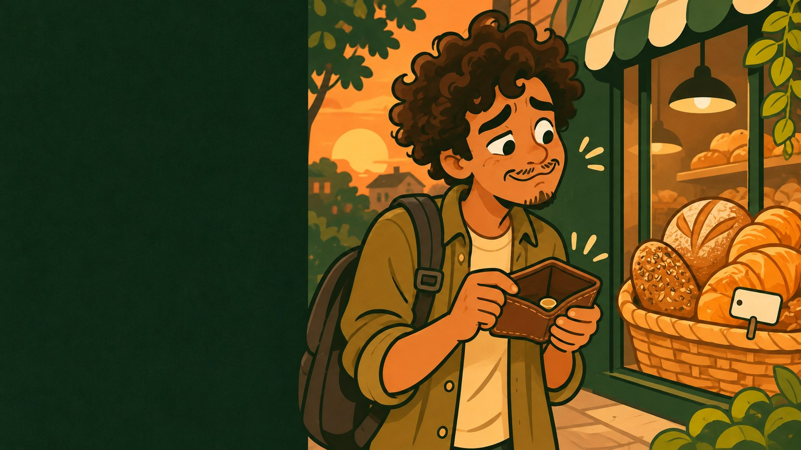
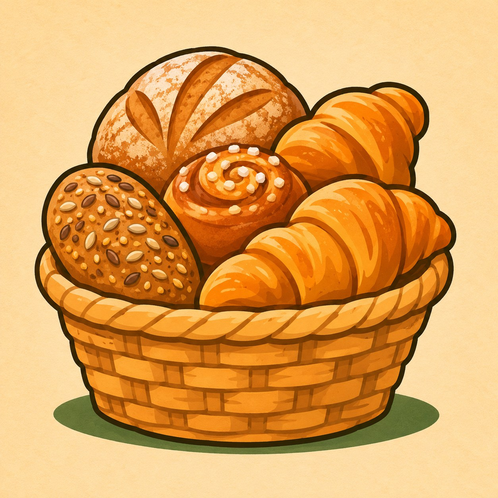
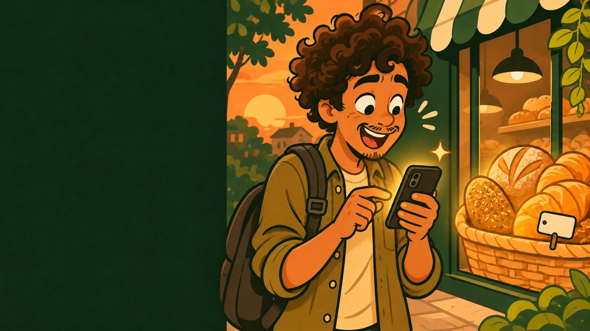
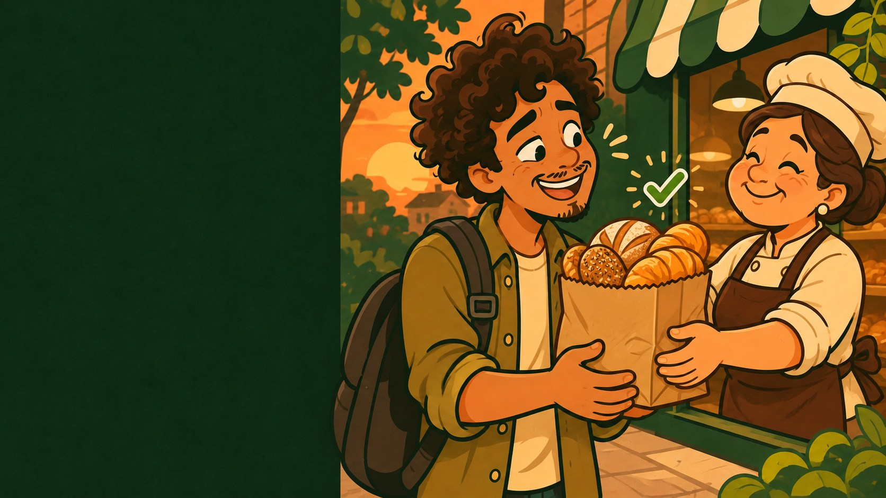
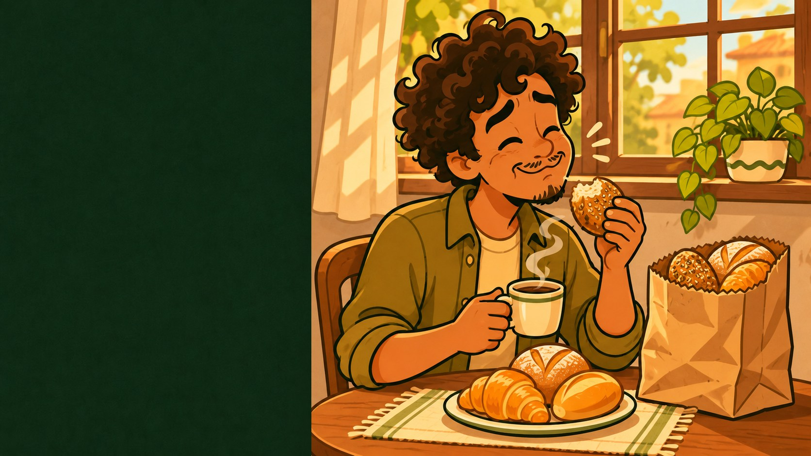

FIM DO DIA · JOAQUIM, UNIVERSITÁRIOEle quer economizar
no café da manhã.Na padaria, a sacola de pães custa R$ 24,90.

SACOLA DO DIAR$ 24,90
UMA OFERTA PERTO DE CASANo Sobrou,
cabe no bolso.Sacola surpresa da Pão da Vila, por R$ 9,90.
sobrouOfertas por perto
PÃO DA VILA · 800 MSacola surpresaR$ 9,90R$ 24,90−60%
6 disponíveis · hoje, 17h–19h
Reservar oferta →

RESERVA E RETIRADA PELO APPReserva confirmada.
Ele retira a sacola.Horário combinado e código prontos no app.
✓
RESERVA CONFIRMADAHOJE · 17H–19HPão da Vila · 800 mCódigo SB1001
NA MANHÃ SEGUINTECafé gostoso.
Preço mais leve.A padaria vende o excedente. Joaquim economiza.
CAFÉ DA MANHÃR$ 15economizados com a sacola